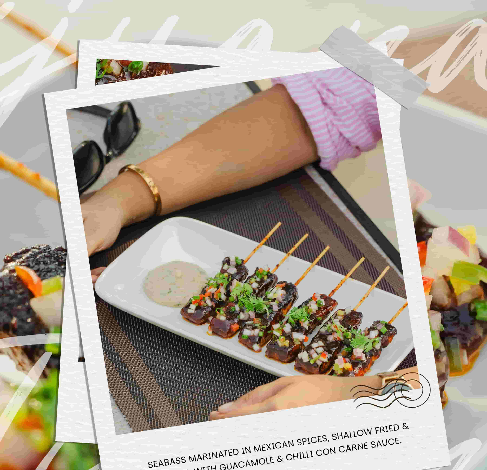
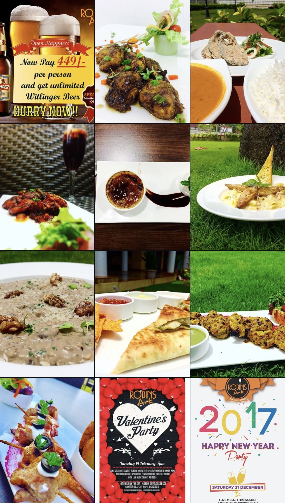
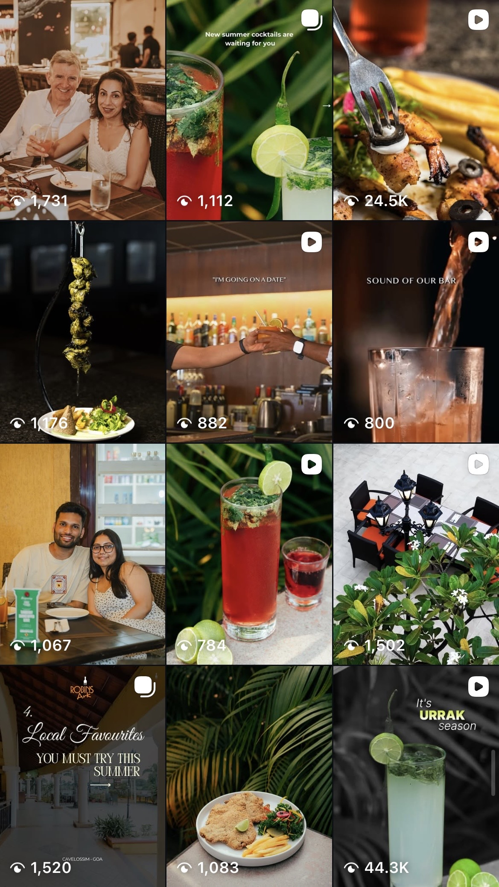

Robin's
Ark
Robin's Ark is a popular dining destination known for its vibrant ambience, seasonal experiences, and regular live music events. For the past four years, we have partnered with the brand to build and maintain a strong digital presence that reflects its unique personality and customer experience. Our role has evolved from managing Instagram content to overseeing a broader digital strategy, including Google Business Profile management and online reputation building.

What Wasn't WORKING
When Robin's Ark approached us, the brand needed a more structured and consistent social media strategy. While the restaurant offered memorable dining experiences, seasonal promotions, and regular live entertainment, these experiences were not being communicated effectively online.
The Instagram profile lacked a clear content direction, highlights were not organised, and the bio required optimisation to improve customer experience and brand positioning. There was also an opportunity to better leverage customer interactions, staff personalities, and influencer collaborations to create more engaging and authentic content.
Additionally, the Google Business Profile was underutilised, limiting the brand's visibility in local search results and reducing opportunities to strengthen its online reputation.

What They Wanted to ACHIEVE
The primary objective was to establish a strong and engaging digital presence that accurately reflected the Robin's Ark experience.
The brand wanted to promote seasonal campaigns, increase customer engagement, showcase new menu launches, strengthen customer relationships, and build a recognisable online identity. Additional goals included improving local visibility through Google Business Profile management, increasing customer enquiries, and driving greater awareness of live music events and special promotions.
Key Performance INDICATORS
- Engagement rate
- Reach and impressions
- Reel performance
- Profile visits
- Customer interactions
- Follower growth
- Review growth
- Overall brand visibility

How We APPROACHED IT
Over the past four years, we have developed and implemented a long-term content strategy focused on consistency, creativity, and community engagement.
We optimised the Instagram profile by refining the bio and creating organised story highlights to improve navigation and user experience.
Regular photography and videography shoots ensured a steady flow of high-quality content showcasing the restaurant's ambience, food, beverages, live entertainment, and customer experiences. Seasonal campaigns were planned and executed throughout the year, including summer campaigns, monsoon promotions, Valentine's Day specials, and other key occasions.
To maintain excitement and encourage repeat visits, we introduced monthly menu launch campaigns featuring new dishes. This included creating table tent cards, in-house promotional materials, social media creatives, and detailed reels highlighting ingredients, preparation methods, and signature offerings.
Live music events, held every Thursday through Sunday, were supported with professionally designed promotional posters and regular content updates to maximise visibility and attendance.
Influencer collaborations and co-branded reels were incorporated to expand the restaurant's reach and connect with new audiences.
One of the most impactful aspects of the strategy was creating authentic staff-led content. Over the years, we have produced and edited numerous behind-the-scenes videos, staff reels, and light-hearted content that showcased the team's personality and created a stronger connection with the audience. These reels consistently delivered high engagement and helped build a loyal online community.
Alongside Instagram management, we expanded our services to include Google Business Profile management. This involved regularly posting updates, responding to customer reviews, maintaining accurate business information, and improving the brand's local search presence.
Channels PRIORITISED
Before & After


What We ACHIEVED
Our long-term strategy helped Robin's Ark establish a strong and recognisable digital presence across Instagram and Google.

Visual HIGHLIGHTS
This case study is supported by seasonal campaign creatives, live music posters, influencer collaborations, customer experience content, staff reels, food photography, menu launch campaigns, table tent cards, Google Business Profile updates, and before-and-after screenshots of the Instagram profile.
Latest Reels
What the Client SAID
"We've had a fantastic experience with Flashlab Creative. Their social media strategies are creative and impactful, and our engagement and reach have grown steadily since we started working with them. Anuraj and his team are professional, easy to communicate with, and always on top of the latest trends. Highly recommended!"
Similar Case Studies


Ready to be
Our Next Case Study?
Let's build something remarkable together — a campaign, a brand, or a digital experience your audience won't forget.